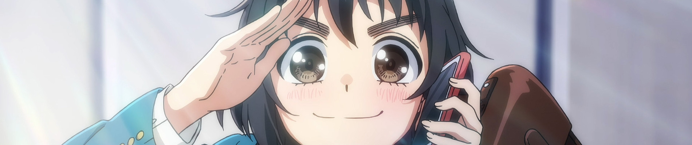
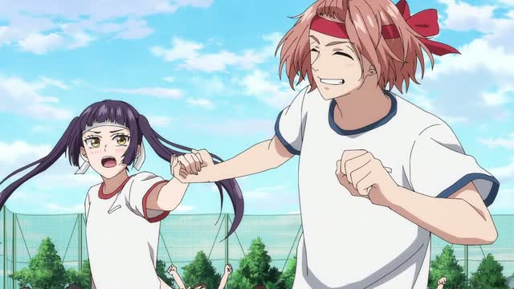
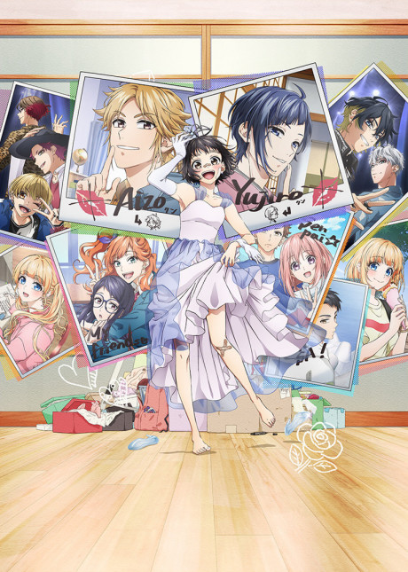
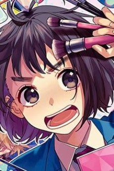
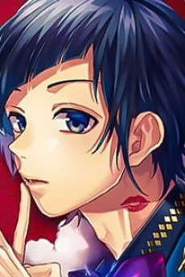
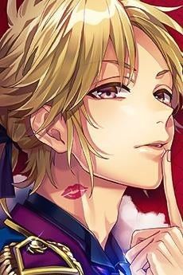
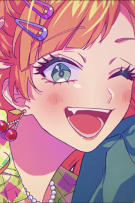
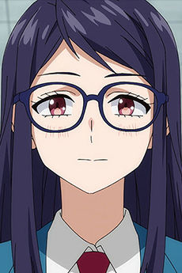
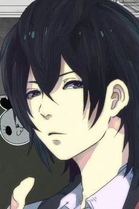

КАДР НАЙДЕН ЗА 1,2 С
Heroines Run the Show
ヒロインたるもの！〜嫌われヒロインと内緒のお仕事〜
7 апреля 2022TV
12 серий24 мин
Finished

fba21fb19b5f12dd…
Hiyori left her hometown to pursue her passion, track and field, by enrolling in Tokyo's Sakuragaoka High School. Looking for a part-time job in Tokyo, she ended up working as an apprentice manager for her classmates (and LIP×LIP members) Yuujirou Someya and Aizou Shibasaki.







Прогон выполнен тем же кодом, что и приложение: кадр отправлен в локальный мост
(POST /api/frame/identify), мост вызвал MCP-серверы trace-moe-mcp и
imgfind-mcp, ответ разобран на телефоне и дополнен данными AniList GraphQL.
Видеокадр не содержит тегов персонажа, поэтому приложение показывает список кандидатов
и даёт выбрать вручную; с ключом SAUCENAO_API_KEY в bridge/.env
определение персонажа становится автоматическим.